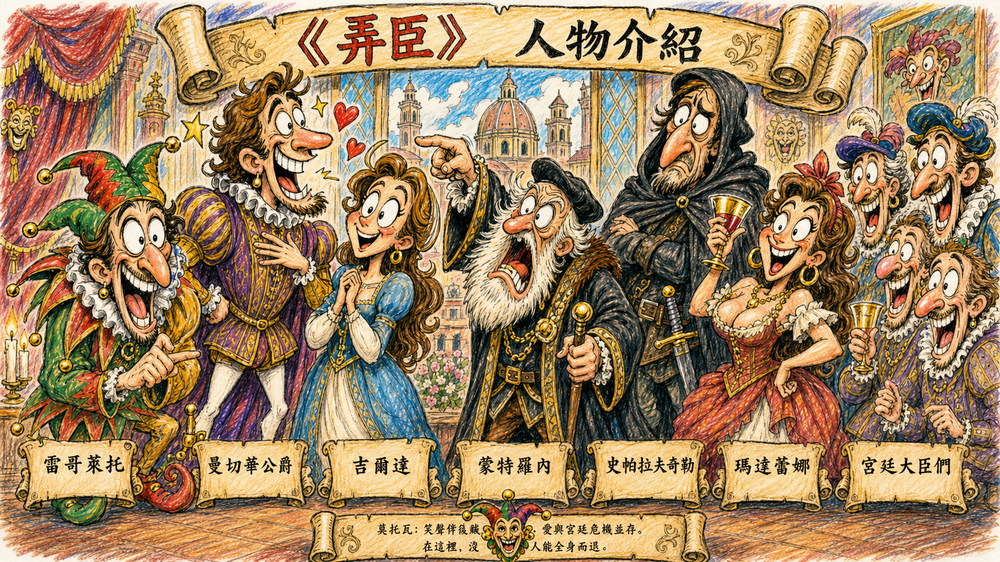
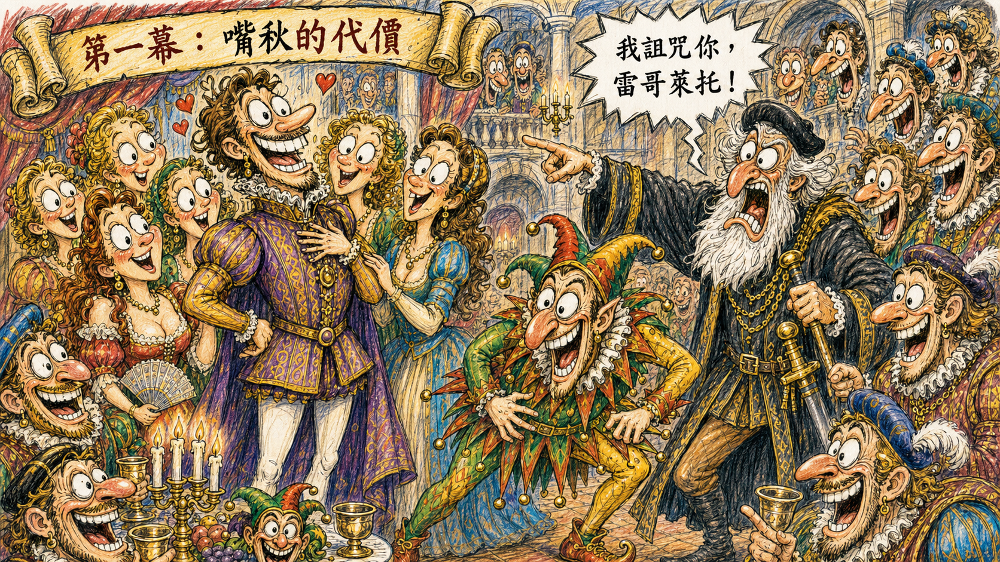
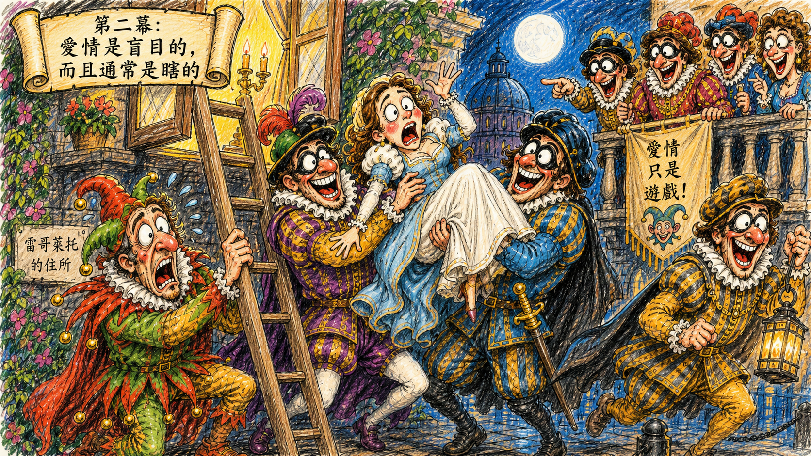
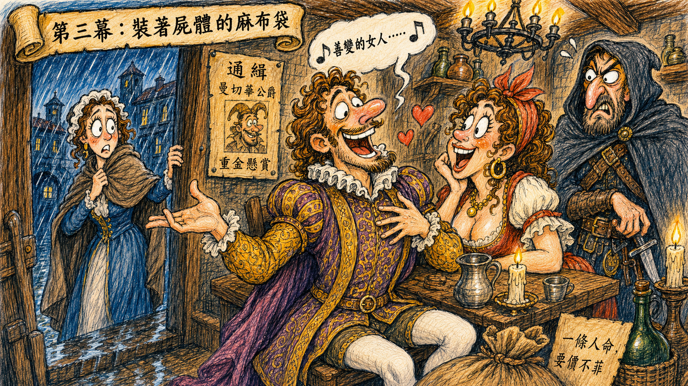
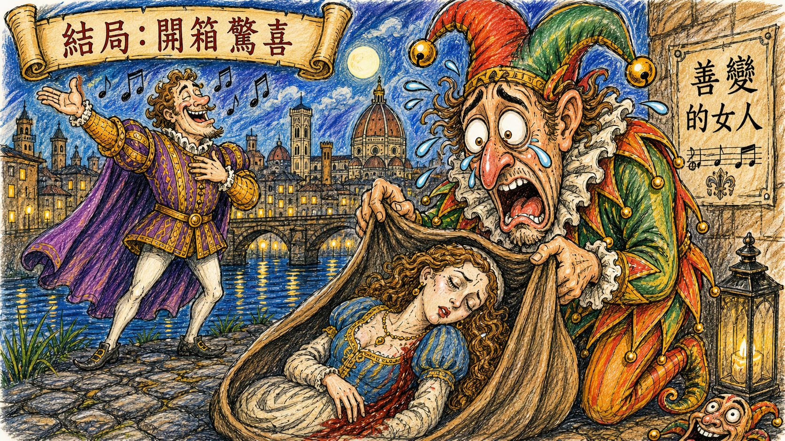

雷哥萊托 Rigoletto
宮廷弄臣，公爵身邊的毒舌工具人。白天笑別人的悲劇，晚上把女兒藏得像國家機密。
職場霸凌、父權控制狂、宮廷渣男圖鑑，以及一個詛咒如何把所有人的人生一起拖下水。
鄉親啊，如果說《Gianni Schicchi》是搶遺產的黑色喜劇，那麼威爾第的《弄臣》就是一場關於「嘴巴太壞會出事、爸爸太控會反噬、帥哥太渣會害死人」的悲劇。
這齣戲的核心只有三個字：詛咒啊！ 它像宮廷裡最不受歡迎的主管郵件，一開始大家覺得只是情緒發言，最後卻發現：完了，這封真的有法律效力。

宮廷弄臣，公爵身邊的毒舌工具人。白天笑別人的悲劇，晚上把女兒藏得像國家機密。
魅力滿點，道德歸零。若活在現代，大概每天都在法庭、媒體與社群平台三地奔波。
雷哥萊托的女兒，純真、善良、戀愛腦滿點。她相信真愛，但真愛這次看起來很像詐騙集團。
憤怒老伯爵，被公爵傷害後前來討公道。他的詛咒比任何咒語都準，堪稱全劇最強售後服務。
職業殺手，話少、手穩、收錢辦事。服務項目明確，退費機制不明。
殺手妹妹，負責把客人騙進旅館。她的問題是：工作到一半竟然對目標動心。
一群被雷哥萊托嘲笑很久的人。平常忍氣吞聲，找到機會就集體報復，十分符合職場生態。
故事開場在曼切華公爵的宮廷。這裡表面上是貴族社交場合，實際上比較像一間沒有 HR 的大型問題公司。公爵是老闆，雷哥萊托是他身邊的毒舌弄臣，工作內容就是替老闆製造笑聲，順便羞辱所有被老闆傷害過的人。
這時，憤怒的蒙特羅內伯爵衝進來，控訴公爵玩弄了他的女兒。按理說，這是一個悲傷的父親在討公道；但雷哥萊托偏偏在旁邊嘲笑他，嘴賤程度直逼職場災難。
蒙特羅內氣炸，指著雷哥萊托發出詛咒：「你這個嘲笑父親痛苦的人，我詛咒你！」
因為他有一個秘密：他把自己的女兒吉爾達藏在家裡，不讓她知道外面的世界，也不讓她知道爸爸到底在宮廷裡做了多少欠揍的事。

吉爾達被父親關在家裡，生活範圍小到像被設定了家長監護模式。她唯一能出門的地方是教堂，結果就在那裡遇見一位自稱「窮學生」的帥哥。
沒錯，這位窮學生就是曼切華公爵偽裝的。公爵在情場上最大的技能，就是把自己的真實身分、真實意圖與真實道德水準全部隱藏起來。
吉爾達一見鍾情，覺得這一定是真愛。可惜觀眾都知道：這不是愛情童話，而是災難片的前導預告。
同時，宮廷大臣們發現雷哥萊托每晚偷偷去見一位美女，以為那是他的情婦。為了報復，他們決定把她綁架來送給公爵。

雷哥萊托發現吉爾達被帶到公爵房間後，整個人崩潰。他決定不再靠嘴巴，而是靠外包：找職業殺手史帕拉夫奇勒處理公爵。
殺手安排妹妹瑪達蕾娜把公爵引到破爛旅館。公爵毫無危機感，還唱出全劇最有名的詠嘆調：〈La donna è mobile〉，也就是〈善變的女人〉。
這首歌的大意是：「女人像羽毛一樣善變。」問題是，這句話由全劇最善變的男人唱出來，雙標程度高到可以申請專利。
殺手本來準備動手，但瑪達蕾娜竟然被公爵迷住，求哥哥放他一馬。史帕拉夫奇勒很有職業精神地說：「我收了錢就要交貨。這樣吧，半夜前誰敲門進來，我就殺誰，裝進袋子交差。」
她敲門進去，成了替死鬼。

雷哥萊托來驗收成果。他付了錢，拖著沉重的麻布袋走到河邊，心裡想著：「公爵終於完蛋了。」對一個長期被宮廷制度扭曲的人來說，這可能是他少數覺得命運站在自己這邊的瞬間。
然而，就在他準備享受復仇成果時，遠方傳來熟悉的歌聲：〈La donna è mobile〉。
雷哥萊托瞬間傻住：如果公爵在那邊唱歌，那袋子裡的是誰？
他顫抖著打開麻布袋，看見奄奄一息的吉爾達。她用最後一口氣向父親道別，說自己要去天堂找媽媽。雷哥萊托終於明白：蒙特羅內的詛咒應驗了。
這齣戲告訴我們：不要嘲笑別人的悲劇，不要把女兒關成溫室花朵，更不要相信會唱〈善變的女人〉的渣男。
